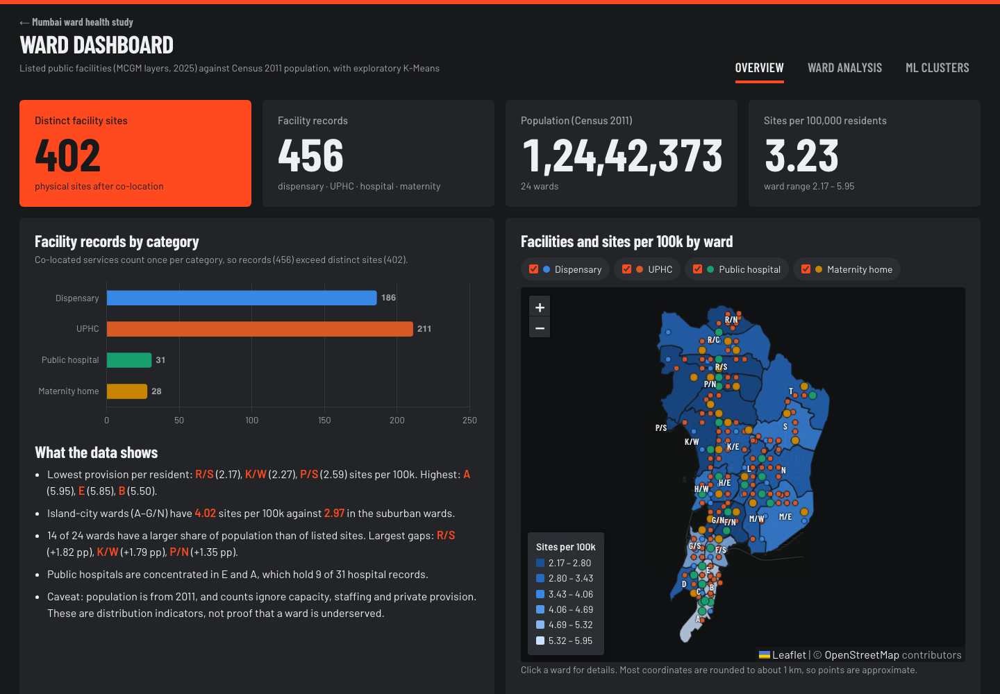

402 health sites 1.24 crore people
A data study of where Mumbai's listed public dispensaries, UPHCs, hospitals and maternity homes sit, ward by ward, against the people they serve.
We laid four city facility maps over the census and 24 wards to ask if care follows people.


Six numbers worth knowing
- 402
- distinct public facility sites, from 456 records; 54 buildings hold more than one service
- 3
- .23
- sites per 100,000 residents across the city
- 2
- .17
- the lowest ward rate, in R South, where one site serves 46,082 people
- 5
- .95
- the highest ward rate, in A ward, home to four public hospitals
- 4
- .02
- sites per 100,000 in the island city, against 2.97 in the suburbs
- 14
- wards hold a bigger share of the city's people than of its listed sites
One command, four stages
Segment widths follow the measured run time (0.6 s, 3.0 s, 32.2 s, under 0.1 s), with a floor so the short stages stay readable. 37 automated tests check the counts, the formulas and that the saved model reproduces every exported cluster.
Every ward, one click

These views now live in a five-page Power BI report, embedded in the dashboard's Power BI tab: model performance, patient data, a map of all 455 located facilities, wards ranked by sites per 100,000 residents, and an insights page. The screenshots show the earlier web versions.
The web dashboard keeps the headline numbers, the heart risk predictor and a ward lookup that opens any ward's full facility and hospital list.
Where to look first
| Ward | Sites per 100k | Share gap |
|---|---|---|
| R South | 2.17 per 100k | +1.82 pp |
| K West | 2.27 per 100k | +1.79 pp |
| P South | 2.59 per 100k | +0.74 pp |
| F North | 2.65 per 100k | +0.77 pp |
| P North | 2.66 per 100k | +1.35 pp |
| G North | 2.67 per 100k | +0.83 pp |
| R North | 2.78 per 100k | +0.48 pp |
| H East | 2.87 per 100k | +0.50 pp |
Share gap is the ward's share of the city's people minus its share of listed sites. A low rate is a reason to look closer, not a verdict: population is from 2011, counts carry no beds or staff, and 18 public hospitals from the city's hospital list are missing from the facility layers.
Find your ward's number
Pick any of the 24 wards to see its sites, its people, its share gap and the cluster it falls into.
Open the ward lookup